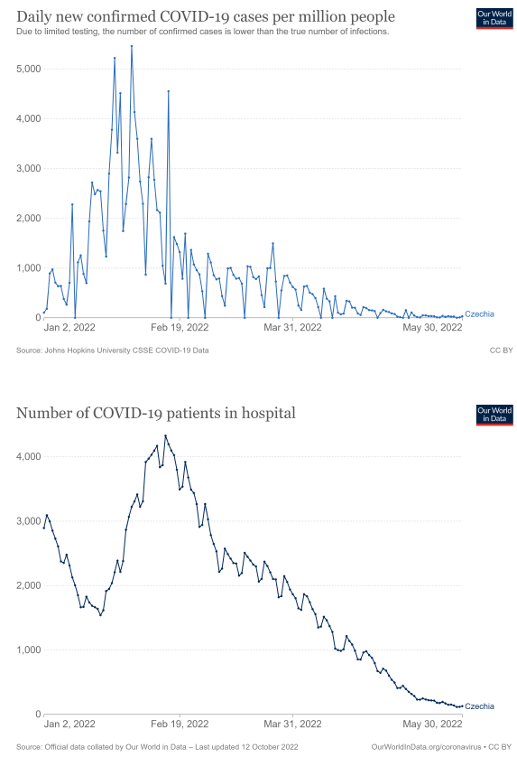

Derive finite distributed lag responses and interpret long-run precision
Explanation, worked examples and practice
Useful first: Derive time-series OLS unbiasedness and diagnose feedback against strict exogeneity
Outcome and conditions
An FDL model spreads adjustment across dates A temporary pulse and a permanent step A static model is a special case, with a source caveat Precision of the long-run sum The EET restaurant-price example
Study conditions, assessment scope and sources
Derive pulse/step response paths, long-run reparameterisation and variance-of-sum reasoning for a supplied finite-lag model. Required components: pulse_step_and_usable_rows, static_boundary_and_lrp_reparameterisation, covariance_precision_and_causal_limits. Supported work may use the cited notes; independent checks use no notes, internet, solution or hints. A basic calculator and blank paper are allowed; reasoning, formula selection and assumptions must be supplied by the learner. Numerical examples below are agent-created hypothetical instantiations unless explicitly labelled as a finished-note example. They do not assert current market or policy facts.
Prerequisites and checks
Check the prerequisites
O011-P1 / item_version 1: O009 is needed because writing a time-series equation does not establish exogeneity/causation. Prompt: Does an intervention dummy with significant slope prove causal policy effect? Key: No; specification and exogeneity/identification need support beyond the fitted association. Pass requires the keyed mechanism and qualification; partial means an omitted step; fail means a conflicting mechanism. Adequate committed evidence under a compatible criterion permits skipping this diagnostic. Otherwise repair through Outcome and conditions before continuing.
Motivation and explanation
An FDL of order \(q\) contains current \(z\) and \(q\) lags, with \(q+1\) slopes. Compare paths holding disturbances/other regressors fixed. A pulse at one date changes just one slot in each future equation: \(\delta_h\) for \(0\le h\le q\), then \(0\). A maintained step progressively fills all slots, giving \(\sum_{j=0}^{\min(h,q)}\delta_j\); its eventual level difference is the LRP sum. Units inherit the outcome/regressor transformation. Without prior history \(q\) first rows cannot construct lags. Static means remove lagged slopes, not current \(\delta_0\). For \(q=2\) set \(\theta=\delta_0+\delta_1+\delta_2\) and substitute \(\delta_0=\theta-\delta_1-\delta_2\): \(\theta\) multiplies \(z_{t}\) while \(\delta_1\)/\(\delta_2\) multiply lag-minus-current contrasts. Equivalent columns let the software report the \(\mathrm{SE}\) of \(\theta\) directly. Alternatively \(\operatorname{Var}(\sum_j\widehat\delta_j)=\sum_j\operatorname{Var}(\widehat\delta_j)+2\sum_{j<k}\operatorname{Cov}(\widehat\delta_j,\widehat\delta_k)\). Separate SEs alone omit covariance. Correlated lags may hurt individual precision without proving that the sum is imprecise. Model paths, source intervention examples and timing plots are not causal estimates; unprovided data/coding and unverified policy dates remain boundaries.
Read the full explanation
Reading context
Deliver these complete reused passages before the worked example; earlier concise prompts are checkpoints, not substitutes. Necessary prerequisites use the complete prepared lessons specified above.
Source passage
Origin: reused complete checked passage Static and finite distributed lag models; fingerprint 9e8cb8c0eeff46c0f43ff601c85d5abac60a13edb674569501974f4f61867849. Heading depth alone is adapted.
Static and finite distributed lag models
Does a change in an explanatory variable affect the outcome immediately, over several later periods, or both? A static time-series model represents a contemporaneous relationship. A finite distributed lag (FDL) model lets the adjustment unfold over a specified number of periods. Distinguishing a temporary pulse from a permanent change is essential: a coefficient describes the response at one lag, while a sum of coefficients describes the eventual response to a maintained change. Lecture 2, PDF pp. 22–24
Back to Econometrics II — Week 2. These specifications can be estimated by OLS, but Time-series OLS and strict exogeneity (strict exogeneity and unbiasedness; variance and exact inference) explains the assumptions needed for unbiasedness and inference. Model coefficients are not automatically causal effects.
A static contemporaneous model
The lecture's static specification is
Here \(z_t\) is the explanatory variable at the same date as outcome \(y_t\), and \(u_t\) collects other influences. The coefficients are time-invariant. Holding the disturbance unchanged, a change in \(z\) gives \(\Delta y_t=\beta_1\Delta z_t\); the contemporaneous slope has units of outcome per unit of \(z\). This is the source's comparison with \(\Delta u_t=0\). It does not say that real observed outcomes change only because of \(z\), or that disturbances necessarily stay fixed between successive calendar dates. Lecture 2, PDF p. 22
The source's demand example is \(D_t=\beta_0+\beta_1Price_t+u_t\), a same-period tradeoff between consumption and price. The specification assumes that the intercept and slope do not change over time. Whether price is exogenous is an additional question: writing a demand equation does not establish that price changes independently of unobserved demand influences. This qualification connects the example to the source's TS2 requirement. Lecture 2, PDF p. 22; Strict exogeneity, PDF p. 11
An FDL model spreads adjustment across dates
For lag order \(q\), write
The lagged variable \(z_{t-j}\) is the value \(j\) periods earlier. There are \(q\) lagged values plus the current value, so an FDL of order two has three slope coefficients. Each \(\delta_j\) has units of \(y\) per unit of \(z\) and describes the model's date-\(t\) response to a change in the value of \(z\) at date \(t-j\), holding the other included values and disturbances fixed. The period is set by data frequency: one lag in monthly data means one month. Lecture 2, PDF pp. 23, 25
Wooldridge likewise treats the static model as current-value-only and the FDL as a current value plus a finite set of earlier values. Its fertility example makes the lag rationale explicit: biological and behavioral decisions can delay the response of births to the tax value of a child. Wooldridge, 5th ed., PDF p. 374 (printed p. 346)
Constructing lags requires earlier observations. If the available raw series begins at date 1 and no earlier \(z\) is supplied, a model with \(q\) lags can first use date \(q+1\). Its estimation sample length is the number of usable rows, not automatically the original series length. This is an agent bookkeeping implication of the displayed indices, relevant when using \(T-k-1\) degrees of freedom from the OLS note. Lecture 2, PDF p. 23; Residual degrees of freedom, PDF p. 18
A temporary pulse and a permanent step
Agent derivation of the source's response interpretation. Compare two regressor paths that share the same disturbance path and all other model inputs. With a one-unit temporary pulse at date \(s\), \(\Delta z_s=1\) and \(\Delta z_t=0\) at all other dates. Substituting in the FDL gives
The impact propensity is \(\delta_0\), the immediate response. The date-\(s+1\) response is \(\delta_1\), and so on. From \(q+1\) periods onward the pulse has left every included regressor position, so it has no further response in this finite-lag specification. This conclusion is a model implication, not a guarantee about an economic system whose effects might last longer than the chosen lag order. Lecture 2, PDF p. 23, temporary increase
For a permanent one-unit increase starting at \(s\), \(\Delta z_t=1\) for every \(t\ge s\). At the first date only the current regressor has changed. One period later both the current and first-lag regressor have changed. Continuing this substitution gives
The long-run propensity (LRP) is the final level difference once all included lags carry the maintained change. It is not the effect in the first period, nor an estimate of a percentage change unless the model's units or transformations justify that interpretation. Lecture 2, PDF p. 23, permanent increase
For order two, the contrast is:
| Period relative to change | Temporary one-unit pulse | Permanent one-unit increase |
|---|---|---|
| \(s\) | \(\delta_0\) | \(\delta_0\) |
| \(s+1\) | \(\delta_1\) | \(\delta_0+\delta_1\) |
| \(s+2\) | \(\delta_2\) | \(\delta_0+\delta_1+\delta_2\) |
| \(s+3\) and later | \(0\) | \(\delta_0+\delta_1+\delta_2\) |
Agent-created table derived from the order-two equation and temporary/permanent comparisons on Lecture 2, PDF p. 23. For example, hypothetical coefficients \((2,0.5,-0.5)\) give pulse responses \((2,0.5,-0.5,0,\ldots)\) and step responses \((2,2.5,2,2,\ldots)\). A negative later response can offset part of an initial increase, so a large impact propensity does not require an equally large long-run propensity. These numbers are an illustration, not an estimated course result. Source model, PDF p. 23

Source Figure 10.1: an illustrative lag distribution, with the largest pulse response at lag 1 and a zero response after lag 2. The horizontal axis is lag, and the vertical axis is a coefficient, not a measured outcome series. The diagram is schematic and contains no numerical coefficient estimates. Wooldridge, 5th ed., PDF p. 375 (printed p. 347)
The textbook's explicit substitutions for a temporary pulse and maintained step give the same response sequences as the table above. Whether an economic response really ends after the chosen number of lags remains an empirical specification question. Wooldridge, 5th ed., PDF p. 375 (printed p. 347); Wooldridge, 5th ed., PDF p. 376 (printed p. 348)
A static model is a special case, with a source caveat
Setting only the lag coefficients \(\delta_1,\ldots,\delta_q\) to zero leaves \(y_t=\alpha_0+\delta_0z_t+u_t\), the static model. The arrows on p. 24 show zeros under the lagged terms. Its accompanying text, however, says to set \(\delta_0,\delta_1,\ldots,\delta_q\) to zero. Taken literally, that also removes the contemporaneous regressor and leaves an intercept-only model. The static-model definition on p. 22 and the p. 24 arrows support retaining \(\delta_0\); the inconsistent source wording is explicitly recorded here. Wooldridge states the special case unambiguously by setting \(\delta_1,\ldots,\delta_q\) to zero while retaining the current-value coefficient. Wooldridge, 5th ed., PDF p. 376 (printed p. 348) Lecture 2, PDF p. 24; Static definition, PDF p. 22
Values of \(z\) at nearby dates are often strongly correlated. This can make the individual \(\delta_j\) estimates imprecise, because there is little independent variation to distinguish their contributions. Substantial lag correlation is imperfect multicollinearity; exact dependence violates full rank. The distinction follows the multiple-regression variance denominator \(SST_j(1-R_j^2)\) in the OLS note. Adding lags is therefore an economic modeling choice with a precision cost, not a mechanical way to improve identification. Lecture 2, PDF p. 24, lag correlation; Variance theorem, PDF p. 18
Precision of the long-run sum
Imprecise individual lag estimates do not imply that their sum is equally imprecise. In the textbook's annual fertility illustration (United States, 1913–1984; 70 usable rows after two lags), the coefficients on current and lagged real personal-exemption values are approximately \(0.073\), \(-0.0058\), and \(0.034\). Their individual standard errors are large, but their estimated sum is about \(0.101\) births per 1,000 women of childbearing age per dollar, with standard error \(0.030\). The source reports a 95% interval of approximately \(0.041\) to \(0.160\), conditional on its maintained model. This is a textbook result, not a recomputed result from a supplied dataset. Wooldridge, 5th ed., PDF p. 386 (printed p. 358); Wooldridge, 5th ed., PDF p. 387 (printed p. 359)
To see why separate standard errors are insufficient, an agent expansion of the variance-of-a-sum identity gives
The coefficient covariances are needed. The book obtains the sum's standard error by reparameterizing an order-two model with \(\theta=\delta_0+\delta_1+\delta_2\):
This follows by substituting \(\delta_0=\theta-\delta_1-\delta_2\). A regression on these transformed columns estimates the same model, with the coefficient on \(z_t\) directly equal to the LRP and its reported standard error attached to that sum. Wooldridge, 5th ed., PDF p. 386 (printed p. 358); Wooldridge, 5th ed., PDF p. 387 (printed p. 359)
The EET restaurant-price example
The lecture asks whether electronic sales reporting (EET), introduced to reduce tax evasion, affects restaurant prices. It proposes monthly restaurant-price-index data from the Czech Statistical Office and a four-lag model:
The source gives no dataset, coefficient estimates, exact variable coding, or identification design. Conditional coding explanation: if \(EET_t\) is a zero/one indicator for an active regime, a maintained switch from zero to one has immediate model difference \(\delta_0\) and final difference \(\delta_0+\cdots+\delta_4\), in price-index points. Other influences on prices remain in \(u_t\), so this response becomes a causal policy effect only with a defensible exogeneity/specification argument. A fitted intervention model alone cannot establish that argument. Lecture 2, PDF p. 25; Exogeneity requirement, PDF p. 11
A price index needs a base period and base value: an index-point change is different from a percentage change or a currency-unit change. For positive index values, the percentage change from date \(a\) to \(b\) is \(100(I_b/I_a-1)\). The slide does not specify the restaurant index's base. This brief index clarification is supplied by the textbook and prevents treating the displayed coefficient as a price change in crowns or as a percentage by default. Wooldridge, 5th ed., PDF p. 388 (printed p. 360)
Source-context boundary: p. 25 states introduction in December 2016, cancellation on January 1, 2023, and reintroduction on January 1, 2027. These are the lecture's policy-context statements; their current legal/calendar accuracy was not independently verified against an authorized external source. They must not be used as confirmed current policy facts. The econometric exercise does not require accepting the claimed future date. No external media or statistical-office link was opened during this ingestion. Lecture 2, PDF p. 25, opening paragraph
A visual motivation for lagged response

Original embedded image from Lecture 2, PDF p. 35. Upper panel: daily newly confirmed COVID-19 cases per million people in Czechia; lower panel: the number of patients in hospital. Both cover dates in early 2022. The upper panel explicitly warns that limited testing means confirmed cases undercount infections; the original source/credit text is preserved. Lecture 2, PDF p. 35
The source places these plots under “Lagged effects.” The waves appear at different stages, motivating a model in which an explanatory series can precede an outcome response. The units differ, and hospital occupancy is not a count of newly admitted patients; comparing peak heights is therefore not a response coefficient. The image supplies neither an estimated lag length nor an FDL fit, and its timing alone does not identify causation. It illustrates why immediate-only specifications may miss dynamics. Lecture 2, PDF p. 35, both panels
What to retain
A static model contains the current explanatory variable; an FDL additionally contains its lags. Read \(\delta_j\) as the date-\(j\) response to a temporary unit pulse, and read their sum as the final response to a permanent unit step, under the model and held-fixed disturbance comparison. Strong correlation between lags affects precision; assumptions about disturbances determine whether these modeled comparisons support unbiased or causal interpretation. Lecture 2, PDF pp. 23–25
Worked example
O011-W1 / item_version 1, worked_example. Prompt: Hypothetical order-two FDL \(y_{t}=\alpha+2z_{t}+0.5z_{t-1}+-0.5z_{t-2}+u_{t}\), outcome in index points, \(z\) a \(0\) or \(1\) regime indicator; raw series has \(24\) rows and no earlier \(z\). Holding other inputs/disturbance path fixed, derive pulse and maintained step responses at \(h=0,1,2,3\), impact and long-run propensity, and usable sample size. Explain which coefficients vanish for a static model. Derive the LRP reparameterisation and why separate coefficient SEs cannot determine its \(\mathrm{SE}\). Given every coefficient variance \(0.04\) and each pair covariance \(-0.01\), calculate variance of their sum. Interpret lag correlation and whether the path alone identifies a causal/current policy effect or the source’s visual lag length.
Steps and interpretation: One-unit pulse response \((2,0.5,-0.5,0)\); step \((2,2.5,2.0,2.0)\); impact \(\delta_0=2\), \(LRP=\delta_0+\delta_1+\delta_2 = 2.0\) index points per unit regime. Substitution explains each lag entering the step versus one changing slot for pulse. Usable dates \(3\)–\(24\), giving \(22\) rows. Static sets \(\delta_1=\delta_2=0\), retains \(\delta_0\); the deck's prose zero-list incorrectly includes current coefficient. With \(\theta=\sum_j\delta_j\), substitute \(\delta_0=\theta-\delta_1-\delta_2\) to obtain \(y=\alpha+\theta z_t+\delta_1(z_{t-1}-z_t)+\delta_2(z_{t-2}-z_t)+u\). Covariance matters: \(\operatorname{Var}(\hat\theta) = \sum_j\operatorname{Var}(\hat\delta_j)+2\sum_{j<k}\operatorname{Cov}(\hat\delta_j,\hat\delta_k) = 0.12+-0.06=0.060000\); \(\mathrm{SE}=\sqrt{0.060000}\), not sum of SEs. Imperfect lag collinearity reduces independent variation and may inflate individual variances; exact collinearity loses rank. A well-estimated sum may coexist with imprecise individual slopes. These model paths need exogeneity/specification for causal claims; indicator coefficients are index points, not percentages/currency by default. No unprovided EET dataset/current legal fact or estimated lag length from case/hospital plots is inferred.
Supported completion
Write your reasoning, then reveal the complete key to check each step.
A local draft for your own study.
Reveal explanation
Key: One-unit pulse response \((1,2,-1,0)\); step \((1,3,2,2)\); impact \(\delta_0=1\), \(LRP=\delta_0+\delta_1+\delta_2 = 2\) index points per unit regime. Substitution explains each lag entering the step versus one changing slot for pulse. Usable dates \(3\)–\(30\), giving \(28\) rows. Static sets \(\delta_1=\delta_2=0\), retains \(\delta_0\); the deck's prose zero-list incorrectly includes current coefficient. With \(\theta=\sum_j\delta_j\), substitute \(\delta_0=\theta-\delta_1-\delta_2\) to obtain \(y=\alpha+\theta z_t+\delta_1(z_{t-1}-z_t)+\delta_2(z_{t-2}-z_t)+u\). Covariance matters: \(\operatorname{Var}(\hat\theta) = \sum_j\operatorname{Var}(\hat\delta_j)+2\sum_{j<k}\operatorname{Cov}(\hat\delta_j,\hat\delta_k) = 0.27+-0.12=0.150000\); \(\mathrm{SE}=\sqrt{0.150000}\), not sum of SEs. Imperfect lag collinearity reduces independent variation and may inflate individual variances; exact collinearity loses rank. A well-estimated sum may coexist with imprecise individual slopes. These model paths need exogeneity/specification for causal claims; indicator coefficients are index points, not percentages/currency by default. No unprovided EET dataset/current legal fact or estimated lag length from case/hospital plots is inferred.
Allowed support: show the named definition or equation in Motivation and explanation, then ask for the missing substitution and interpretation. At most two hints: first identify the relevant distinction; second point to the first keyed step. Reveal the worked solution if those fail. Supported success does not establish acquisition. Fade assistance only once the learner explains the keyed steps; then hide the solution and use an unused full check.
Rubric and independence
Self-assessment criteria and tutor checks
Pass requires every listed component, all requested outputs and essential keyed reasoning without a critical conceptual error. Algebraically equivalent formulas, explicitly defined opposite cash-flow signs and equivalent plain-language reasoning are accepted. Partial means a missing component or a correct method with an unresolved isolated arithmetic slip; fail means the central mechanism or condition is wrong. Unscorable means the response or help/exposure conditions cannot be established. Unknown conditions never certify independence. Arithmetic slips require independent correction before a pass. No numerical grade is invented.
Critical errors: Using LRP for a temporary pulse each period; adding \(q+1\) lost rows; static deletes \(\delta_0\); summing standard errors; index points called percent causal effects without conditions.
Acquisition requires two distinct unassisted passes from I1/I2/D1/D2 using the exact six routes in metadata. Each full prompt and key covers every component; any pair therefore covers the whole outcome twice. A fresh D item used for acquisition cannot later certify delayed retention. Worked/support/prerequisite items and the narrow C1 correction cannot substitute for a full check. The finite bank must not be reused after exposure; request a plan_issue when fewer than two fresh full items remain.
| Component | I1 | I2 | D1 | D2 |
|---|---|---|---|---|
| pulse_step_and_usable_rows | required | required | required | required |
| static_boundary_and_lrp_reparameterisation | required | required | required | required |
| covariance_precision_and_causal_limits | required | required | required | required |
Misconceptions and correction
If pulse and step paths coincide at every \(h\), substitute the changed input slots one date at a time. If sum uncertainty is inferred from individual SEs, name the omitted covariances. Observe the learner's reasoning before diagnosing: a sign or omitted word alone is tentative. Score before help. O011-C1 / item_version 1, narrow_correction. Fresh prompt: Fresh narrow check: \(\delta=(1,-.5,.25)\), one-unit pulse vs step at \(h=2\)/\(h=3\)? Key and rubric: Pulse at \(h=2\): \(.25\), at \(h=3\): \(0\); step at \(h=2\): \(.75\), at \(h=3\): \(.75\), because the maintained change occupies all included slots. Pass only if the keyed repaired component is supplied; partial for an omission or arithmetic slip; fail for the same conflicting mechanism. C1 is not a full independent check. After two ineffective hints show the relevant worked step; after another failed correction pause and return to the named prerequisite or explanation.
Immediate and delayed checks
All items are item_version 1 and full_capability_check. I1/I2 are immediate forms; D1/D2 are distinct delayed forms. Delayed success requires an unused unassisted item before recap, at least 24 actual elapsed hours after acquisition and the most recent relevant teaching/solution exposure, with intervening exposure recorded. A date change alone does not qualify. Early D attempts may be acquisition checks only. Each item is a bounded parallel or near-context variant, not proof of broad transfer. Each key states the full required response; do not improvise extra variants.
A local draft for your own study.
Reveal explanation
Key and essential rubric: One-unit pulse response \((3,-1,0.5,0)\); step \((3,2,2.5,2.5)\); impact \(\delta_0=3\), \(LRP=\delta_0+\delta_1+\delta_2 = 2.5\) index points per unit regime. Substitution explains each lag entering the step versus one changing slot for pulse. Usable dates \(3\)–\(18\), giving \(16\) rows. Static sets \(\delta_1=\delta_2=0\), retains \(\delta_0\); the deck's prose zero-list incorrectly includes current coefficient. With \(\theta=\sum_j\delta_j\), substitute \(\delta_0=\theta-\delta_1-\delta_2\) to obtain \(y=\alpha+\theta z_t+\delta_1(z_{t-1}-z_t)+\delta_2(z_{t-2}-z_t)+u\). Covariance matters: \(\operatorname{Var}(\hat\theta) = \sum_j\operatorname{Var}(\hat\delta_j)+2\sum_{j<k}\operatorname{Cov}(\hat\delta_j,\hat\delta_k) = 0.48+-0.18=0.300000\); \(\mathrm{SE}=\sqrt{0.300000}\), not sum of SEs. Imperfect lag collinearity reduces independent variation and may inflate individual variances; exact collinearity loses rank. A well-estimated sum may coexist with imprecise individual slopes. These model paths need exogeneity/specification for causal claims; indicator coefficients are index points, not percentages/currency by default. No unprovided EET dataset/current legal fact or estimated lag length from case/hospital plots is inferred. All components are required.
A local draft for your own study.
Reveal explanation
Key and essential rubric: One-unit pulse response \((-2,1,0.5,0)\); step \((-2,-1,-0.5,-0.5)\); impact \(\delta_0=-2\), \(LRP=\delta_0+\delta_1+\delta_2 = -0.5\) index points per unit regime. Substitution explains each lag entering the step versus one changing slot for pulse. Usable dates \(3\)–\(40\), giving \(38\) rows. Static sets \(\delta_1=\delta_2=0\), retains \(\delta_0\); the deck's prose zero-list incorrectly includes current coefficient. With \(\theta=\sum_j\delta_j\), substitute \(\delta_0=\theta-\delta_1-\delta_2\) to obtain \(y=\alpha+\theta z_t+\delta_1(z_{t-1}-z_t)+\delta_2(z_{t-2}-z_t)+u\). Covariance matters: \(\operatorname{Var}(\hat\theta) = \sum_j\operatorname{Var}(\hat\delta_j)+2\sum_{j<k}\operatorname{Cov}(\hat\delta_j,\hat\delta_k) = 0.75+-0.24=0.510000\); \(\mathrm{SE}=\sqrt{0.510000}\), not sum of SEs. Imperfect lag collinearity reduces independent variation and may inflate individual variances; exact collinearity loses rank. A well-estimated sum may coexist with imprecise individual slopes. These model paths need exogeneity/specification for causal claims; indicator coefficients are index points, not percentages/currency by default. No unprovided EET dataset/current legal fact or estimated lag length from case/hospital plots is inferred. All components are required.
A local draft for your own study.
Reveal explanation
Key and essential rubric: One-unit pulse response \((0.5,1.5,-0.5,0)\); step \((0.5,2.0,1.5,1.5)\); impact \(\delta_0=0.5\), \(LRP=\delta_0+\delta_1+\delta_2 = 1.5\) index points per unit regime. Substitution explains each lag entering the step versus one changing slot for pulse. Usable dates \(3\)–\(36\), giving \(34\) rows. Static sets \(\delta_1=\delta_2=0\), retains \(\delta_0\); the deck's prose zero-list incorrectly includes current coefficient. With \(\theta=\sum_j\delta_j\), substitute \(\delta_0=\theta-\delta_1-\delta_2\) to obtain \(y=\alpha+\theta z_t+\delta_1(z_{t-1}-z_t)+\delta_2(z_{t-2}-z_t)+u\). Covariance matters: \(\operatorname{Var}(\hat\theta) = \sum_j\operatorname{Var}(\hat\delta_j)+2\sum_{j<k}\operatorname{Cov}(\hat\delta_j,\hat\delta_k) = 1.08-0.30=0.780000\); \(\mathrm{SE}=\sqrt{0.780000}\), not sum of SEs. Imperfect lag collinearity reduces independent variation and may inflate individual variances; exact collinearity loses rank. A well-estimated sum may coexist with imprecise individual slopes. These model paths need exogeneity/specification for causal claims; indicator coefficients are index points, not percentages/currency by default. No unprovided EET dataset/current legal fact or estimated lag length from case/hospital plots is inferred. All components are required.
A local draft for your own study.
Reveal explanation
Key and essential rubric: One-unit pulse response \((4,-2,1,0)\); step \((4,2,3,3)\); impact \(\delta_0=4\), \(LRP=\delta_0+\delta_1+\delta_2 = 3\) index points per unit regime. Substitution explains each lag entering the step versus one changing slot for pulse. Usable dates \(3\)–\(20\), giving \(18\) rows. Static sets \(\delta_1=\delta_2=0\), retains \(\delta_0\); the deck's prose zero-list incorrectly includes current coefficient. With \(\theta=\sum_j\delta_j\), substitute \(\delta_0=\theta-\delta_1-\delta_2\) to obtain \(y=\alpha+\theta z_t+\delta_1(z_{t-1}-z_t)+\delta_2(z_{t-2}-z_t)+u\). Covariance matters: \(\operatorname{Var}(\hat\theta) = \sum_j\operatorname{Var}(\hat\delta_j)+2\sum_{j<k}\operatorname{Cov}(\hat\delta_j,\hat\delta_k) = 1.47+-0.36=1.110000\); \(\mathrm{SE}=\sqrt{1.110000}\), not sum of SEs. Imperfect lag collinearity reduces independent variation and may inflate individual variances; exact collinearity loses rank. A well-estimated sum may coexist with imprecise individual slopes. These model paths need exogeneity/specification for causal claims; indicator coefficients are index points, not percentages/currency by default. No unprovided EET dataset/current legal fact or estimated lag length from case/hospital plots is inferred. All components are required.
Content provenance and generation boundaries
Sources and scope
Complete checked-note passages above are reused with only heading-depth and explicit mathematical typography adaptation; exact origin/fingerprint and asset dependencies are in source_manifest.md. All earlier plan-created exercises/full keys and named evidence routes remain intact. Hypothetical arithmetic instantiates the included definitions and does not introduce empirical results or new academic claims. Only named prepared full-capability forms and their existing permitted pairs can certify acquisition/delayed evidence. Extra checked explanation/practice cannot replace a named full form or reassessment gate. Equivalent verified methods may meet the unchanged pre-answer criterion; ambiguous criteria or an exhausted fresh bank return to plan. The current objective revision is 2; item/criterion versions remain as explicitly stated above.